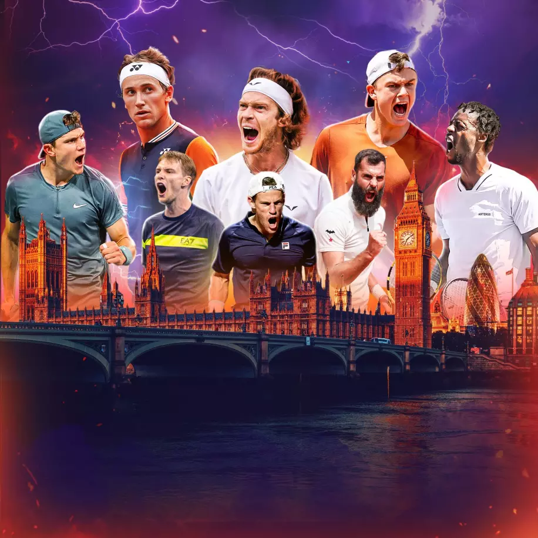

Tournaments
In tennis there are 5 different types of events that are played throughout the year. They include 125's, 250's, 500's, 1,000's, and grand slams. These tournaments determine the total amount of points that the winner can earn. At grand slams players can earn between 250 to 2,000 points if they win a tournament.
December 10 - December 17
Open BLS de Limoges: Limoges,France: Dec 11 - Dec 17, 2023

In the final WTA 125 tournament of the 2023 season, Spain's Cristina Bucsa swept the singles and doubles titles at the Open BLS de Limoges in Limoges, France. Bucsa started the day with a 2-6, 6-1, 6-2 victory over French hope Elsa Jacquemot in the singles final. No.5 seed Bucsa, ranked World No.82 in singles, took 1 hour and 48 minutes to outlast 235th-ranked Jacquemot and win her first career WTA 125 singles title. Less than an hour later, Bucsa headed back to the center court for the doubles final, where she and Yana Sizikova upset No.2 seeds Oksana Kalashnikova and Maia Lumsden 6-4, 6-1 to claim the title. The 25-year-old Bucsa had not dropped a set on her way to the Limoges singles final, but she did have a tricky quarterfinal against 20-year-old wild card Lois Boisson earlier in the week. In the doubles final, Bucsa and Sizikova broke their opponents seven times en route to the 68-minute win. The champions were twice down an early break at both 2-0 and 3-1 in the opening set, but they notched 11 of the next 13 games to attain victory. Bucsa has now won four WTA 125 doubles titles in her career : all of which have come in the last 13 months, and alongside four different partners. It is the second WTA 125 doubles title of Sizikova's career, with her previous one coming at Colina, Chile last November with Aldila Sutjiadi.
UTS: London,England: Dec 15 - Dec 17, 2023 
Jack "The Power" Draper has put on a show for home fans, blasting past Holger "The Viking" Rune 12-14, 15-12, 13-10, 19-7 on Sunday to remain undefeated and win the UTS Grand Final in London. One semi-final was nearly abandoned, with controversy marring the clash between Andrey "Rublo" Rublev and Rune as the Dane won 20-10, 12-11, 16-11, while the other was won by the narrowest of margins with eventual champion Draper edging past Casper "The Iceman" Ruud 14-13, 12-11, 14-13. Despite all the intensity of the final day at the UTS Grand Final, Draper's biggest concern now is wondering how he'll get the spectacular UTS "Zeus" trophy through the airport. He defeats Holger Rune aka The Viking 3 quarters to 1, he has only lost two quarters in 5 matches this weekend. Heading into the Final Four, Rublo was looking like the man to beat. The Russian had won the most recent UTS tournament in Frankfurt in September, and navigated Group B with an undefeated 3-0 record across the first two days of the UTS Grand Final. However, a resurgent Rune had other plans, with the Dane heading into the semi-final off the back of a much improved day two in London. It was The Viking who started better in the encounter, racing past Rublo 20-10 in the opening quarter. Rublev was much improved in the second, however, generating a sudden death point to determine the quarter at 11-11. This was where the drama unfolded. After several minutes of confusion over a misunderstanding about the announcement of a 3-point card, Rublo goes to the referee to make it clear that he wants to use it again. Rublo was furious that his "next point counts three" card had not been acknowledged by the umpire, despite claiming to have gestured for it to be used ahead of the quarter's end. Bizarrely, he was allowed to take his serve twice on quarter point, which led to Rune winning the rally and claiming the quarter 12-11. The Russian almost refused to return for the third quarter. When play resumed, The Viking wrapped the semi-final up 16-11 to book his spot in the final. UTS is all about fine margins, and Draper really embraced that in his Final Four match against Ruud on Sunday. The Brit had been in excellent form in London, winning each of his previous three matches comfortably. However, against The Iceman he needed every bit of luck, claiming the match 14-13, 12-11, 14-13 with each quarter going to a deciding point. Many of the headlines ahead of the UTS Grand Final were about the mouth-watering prospect of young stars Draper and Rune squaring off. When they met in group play, the clash was something of a fizzler, with The Viking misfiring and losing 3-0. In the final of the UTS Grand Final, Rune was determined to allow no such repeat. The Dane came out swinging, and claimed the opening quarter 14-12–only the second quarter that Draper had lost this weekend. It was to be the last quarter that the Brit would lose, however, as The Power lived up to his UTS nickname and turned on the after-burners, powering to three consecutive quarter victories. After a tight second and third quarter, Draper ran away with the match 19-7 in the fourth quarter, winning the final conclusively. Next up, Draper will turn his attention to the ATP Tour where he'll be hoping to improve on his quarter-final run at the most recent Grand Slam, with a deep run in January's Australian Open.